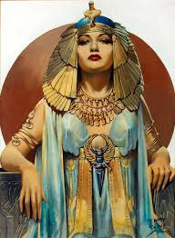

<html>
    <head>
        <title>cleopatra</title>
        </html>
    <body>
        <h1>კლეოპატრა</h1>
        <p>ლეოპატრა VII ფილოპატორი (ძვ. ბერძნ. Κλεοπάτρα Φιλοπάτωρ, 2 ნოემბერი,<br>
        ძვ. წ. 69 12 აგვისტო, ძვ. წ. 30) — ეგვიპტის უკანასკნელი დედოფალი პტოლომეების მაკედონური დინასტიიდან.<hr> <br></p>
       <p><i> ცნობილი იყო რომაელი დიდი მხედართმთავრის მარკუს ანტონიუსისადმი სიყვარულით.</i><br> 
        სიცოცხლე თვითმკვლელობით დაასრულა,<br>
        რათა რომის პირველი იმპერატორის ოქტავიანე ავგუსტუსის ტყვე არ გამხდარიყო.
        <b>კლეოპატრა ანტიკური სამყაროს ერთ-ერთი ყველაზე სახელგანთქმული პერსონაჟია</b><br>
        <u>როგორც ფერწერაში, ისე ლიტერატურასა და კინემატოგრაფში.</u></p>    <hr>
            
        
        
        
        <h2>კლეოპატრა VII ეგვიპტეს ძმებთან </h2>
        <p>პტოლემე XIII და პტოლემე XIV ერთად (<u>ტრადიციის თანახმად,<br>
        ისინი მის მეუღლეებად მიიჩნეოდნენ</u>),<br> 
        შემდეგ კი რომაელ მხედარმთავარ მარკუს ანტონიუსთან,<br>
        ფიქტიურ ქორწინებაში თანაცხოვრებით, 21 წელი მართავდა.<hr></p><b> 
        <h3>უკანასკნელი</h3>ის იყო ეგვიპტის უკანასკნელი დამოუკიდებელი მმართველი,<br>
        სანამ მის ქვეყანას რომის იმპერია დაიპყრობდა და ერთ-ერთ პროვინციად აქცევდა.</b><br><h4>საყოველთაოდ ცნობილი სიყვარული</h4>
        <p>საყოველთაოდ ცნობილი გახდა იულიუს კეისართან და მარკუს ანტონიუსთან სასიყვარულო კავშირის შედეგად.<br>
        კეისრისგან ვაჟი ეყოლა, ანტონიუსისგან კი ორი ვაჟი და ქალიშვილი.
        <h5>კლეოპატრა ლეგენდების გმირი </h5> კლეოპატრა თავის სიცოცხლეშივე იქცა ლეგენდების გმირად,<br>
        მისმა ტრაგიკულმა აღსასრულმა კი მის რომანტიზაციას შეუწყო ხელი.<hr></p>
        <h6>ცნობილი კლეოპატრა</h6>
        <p>კლეოპატრას იხსენიებენ პლუტარქე, აპიანი, იოსებ ფლავიუსი და სხვ.,<br>
        თუმცა, ძველი ცნობები მისადმი მთლად კეთილგანწყობილნი არ ჩანან.<hr>
       
    </body>   
</html>      
             
